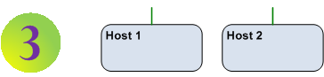

Quick Start Guide

First, you'll need an OpenFlow Network with one or more switches. If you don't have a suitable one to hand then consider building the virtual lab in the Extras section.

Next, you'll need an SDN Controller to run the control plane of the network and host the nmeta application. If you built the virtual lab then you've already got this covered.
If not, build a physical or virtual server. The preferred OS is Ubuntu. Now install Ryu and nmeta as per the Install Guide.

You'll need some participants (hosts) on your network. Again, if you've built the virtual lab you're already covered for this.
If not, decide what types and numbers of hosts you want on your network, then connect them up.

Configure nmeta as per the User Guide

Run nmeta:
cd
cd ryu
PYTHONPATH=. ./bin/ryu-manager ../nmeta/nmeta.py
Now start experimenting...